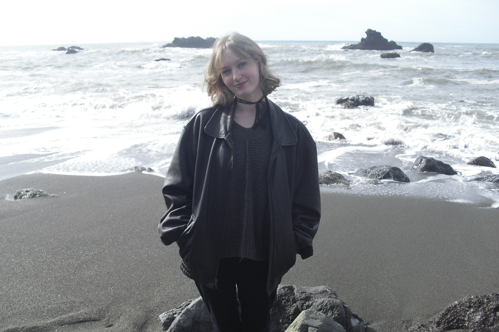

About Me

I am a 20 year old college student majoring in digital media, and working my way to a bachelor's degree in game art and development. I have always loved watching video games growing up and feel a true passion towards every part of them; whether it be the behind the scenes of creating each aspect of the game or the actual act of playing the game.My favorite video game is The Last of Us, and apart from that I really love horror games like Resident Evil 7 and 8 and Until Dawn. I also love choice-based games that allow you to essentially create your own story like the Life is Strange series.
Apart from my passion for video games, I also love art. As of recently, I'm into crafty types of art like cross-stitching, but I love almost any form of art in general. I also love fashion and express that through style and doing activities like thrifting with friends.